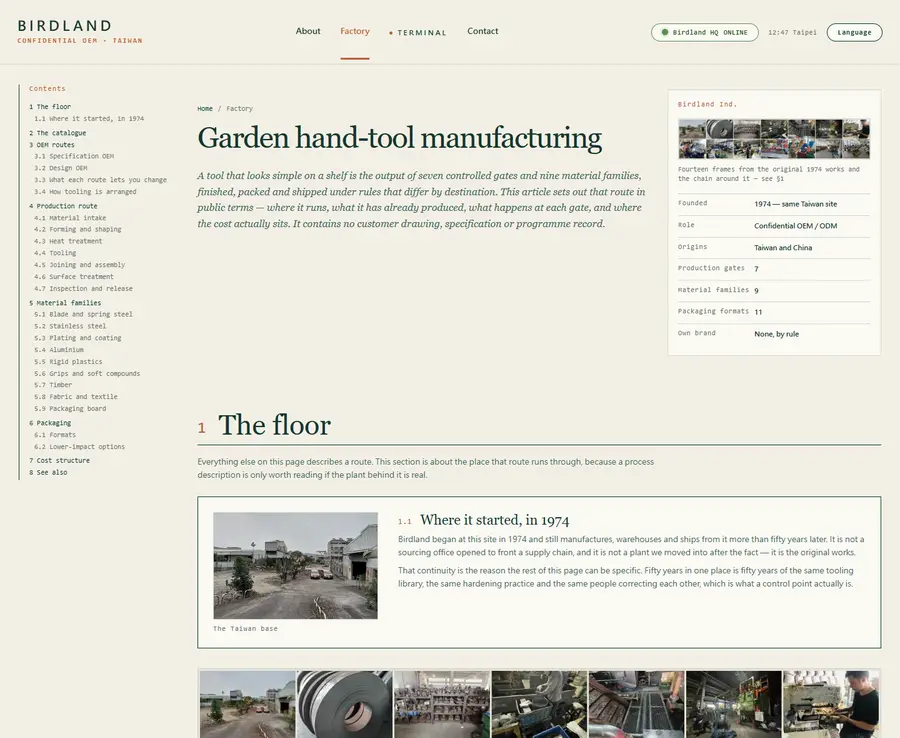
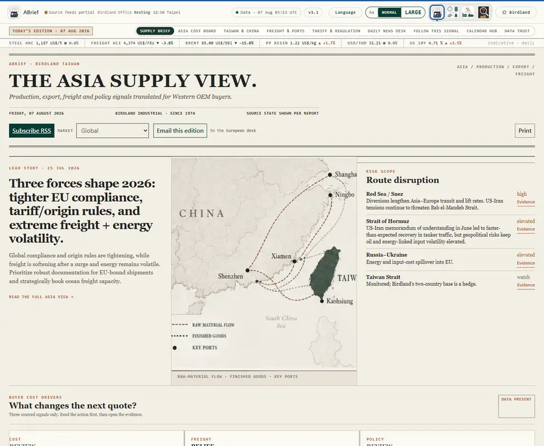
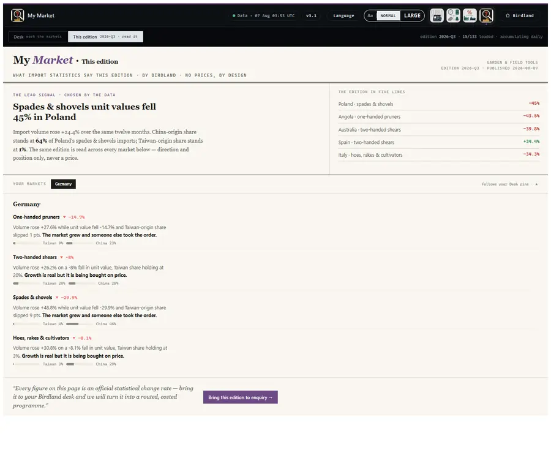
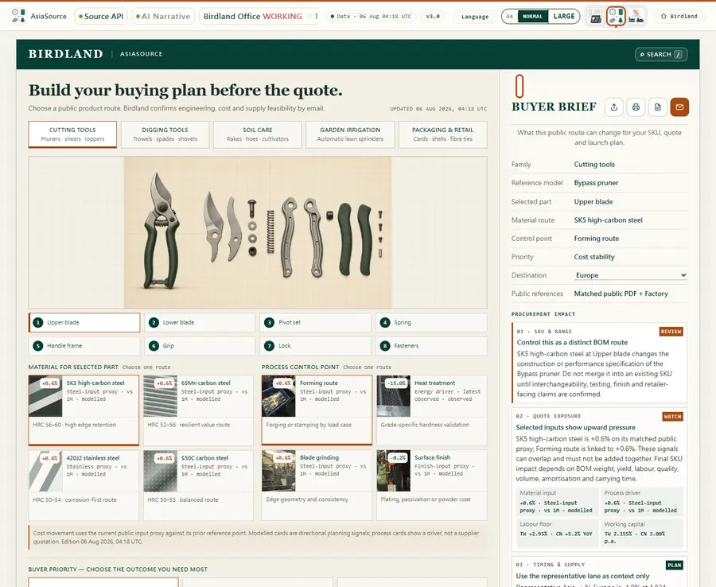
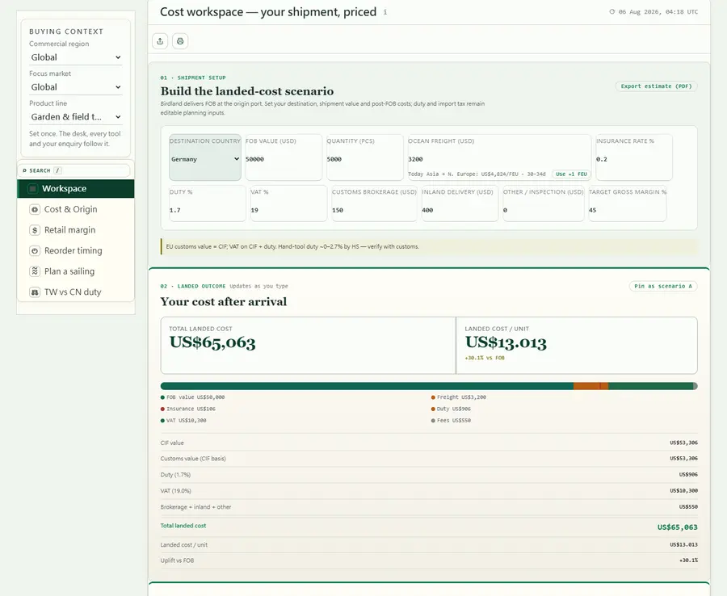
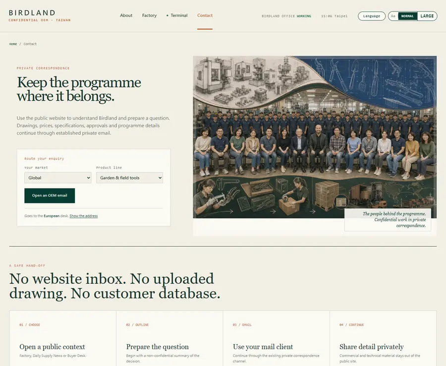

Five steps, in the order they actually happen.
Each step names the page, what you do there, and what you walk away holding. Nothing here needs an account.
-
01About
Know who you’re talking to
Fifty-two years behind other people’s brands, and never a competing retail label.
You leave withWhether the commercial boundary works for you Open About →about.html -
02Factory
Check we can make it
Photographs of the floor, the catalogue, and every material and process route.
You leave withThe material and route your product needs Open the Factory → Browse Insights: the materials encyclopedia →
product-101.html -
03ABrief
See today’s conditions
What moved in steel, resin, freight and policy — and what it changes.
You leave withWhether now is a good week to commit Read today’s edition →
executive.html -
04My Market
See which way your market is moving
Taiwanese and Chinese supply in your own market, set against the markets around it — from published customs statistics.
You leave withA reason to move now, or a reason to wait Open My Market →
my-market.html -
05AsiaSource & CostNow
Work out your number
Plan the programme on AsiaSource, then price it on CostNow: landed cost, margin, timing and sailing.
You leave withA landed cost you can defend internally Open AsiaSource →
partner.html 
cost-desk.html -
06Contact
Ask the real question
Routed to your regional desk. Drawings and prices stay in private email.
You leave withA conversation, not a form submission Open Contact →
contact.html
One question in the middle. Every page is an answer to it.
Not an order — a shape. Arrive with any one of these five questions and go straight to the page that holds the answer.
Set once, follows you. Whichever branch you start from, the region, market and product line you choose there carry to every other page — you are never asked the same question twice.